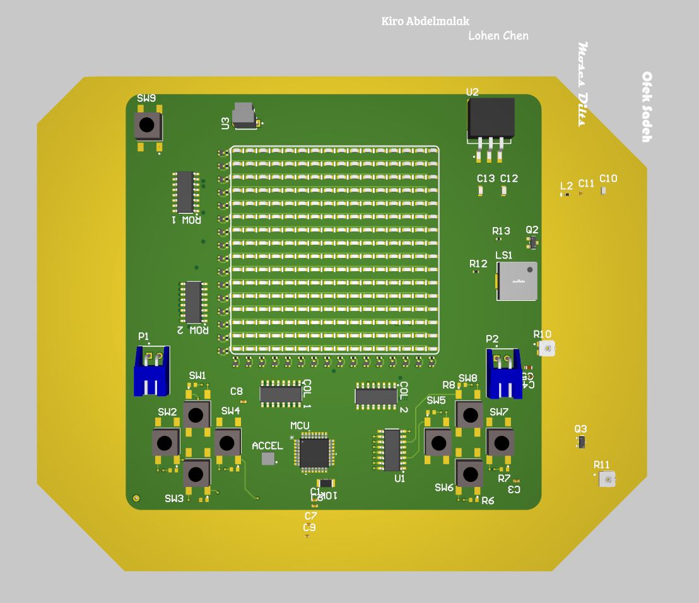
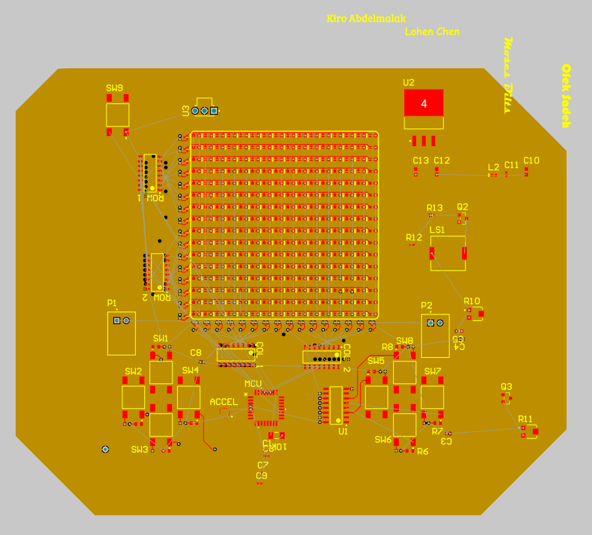
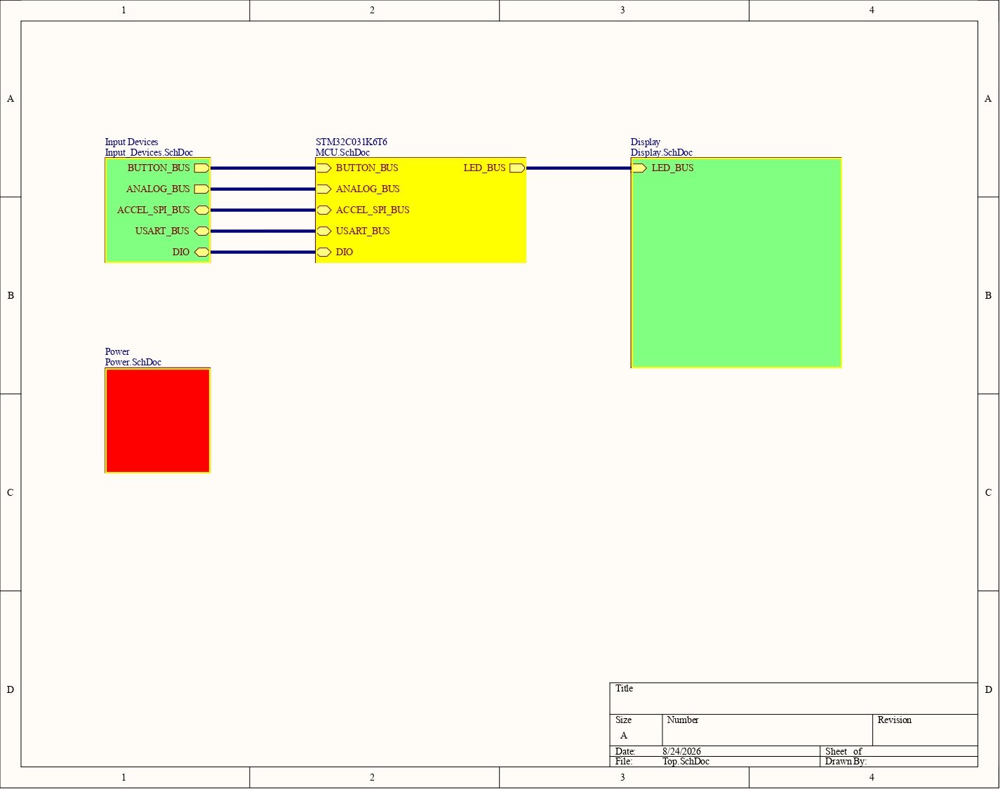
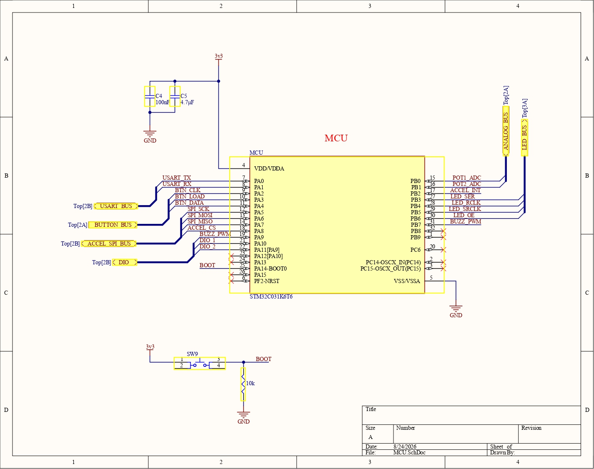
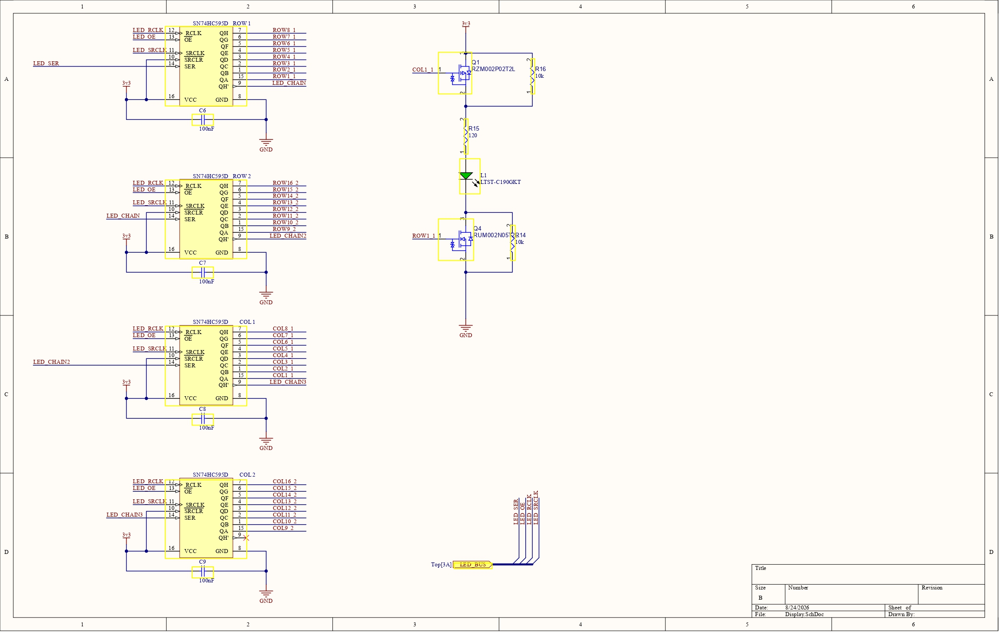
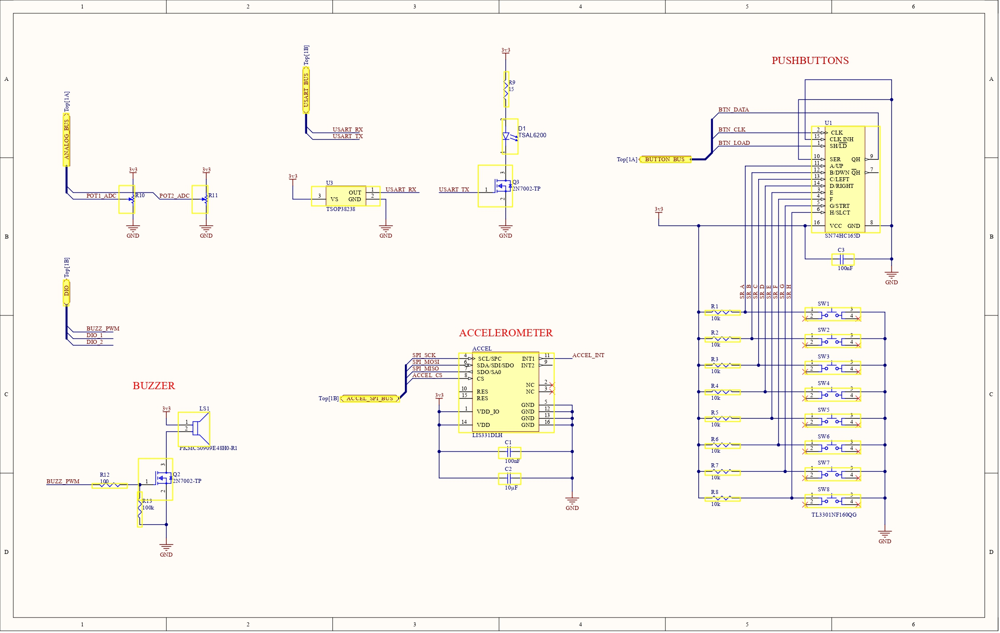
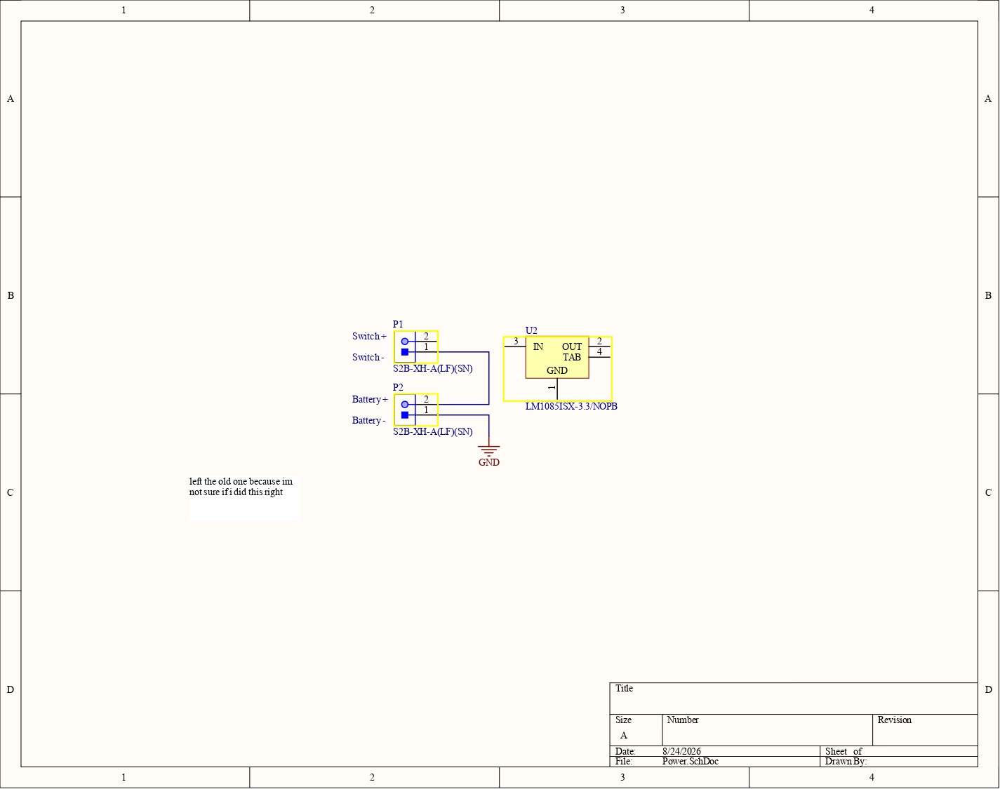

STM32 Handheld Game Console (Work in progress)
This summer I worked on a STM32 based handheld game console. I mainly worked on the software using the STM32 Hardware Abstraction Layer (HAL) to write drivers and middleware. This was my first experience in embedded. I wrote almost the entire thing by myself while learning about all the cool and quirky things about the C programming language. Through this, I really gained an appreciation of the C programming language, especially bitwise operators. I hope to continue doing cool stuff with embedded through the PSP Liquid Rocket Avionics team!
Skills: C, STM32, STM32 HAL, Embedded programming






